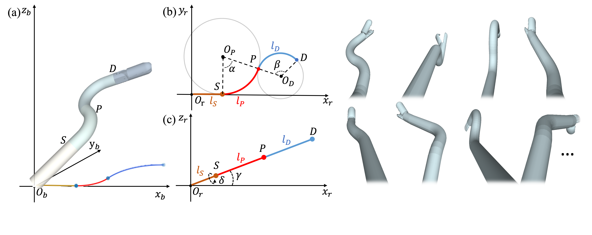
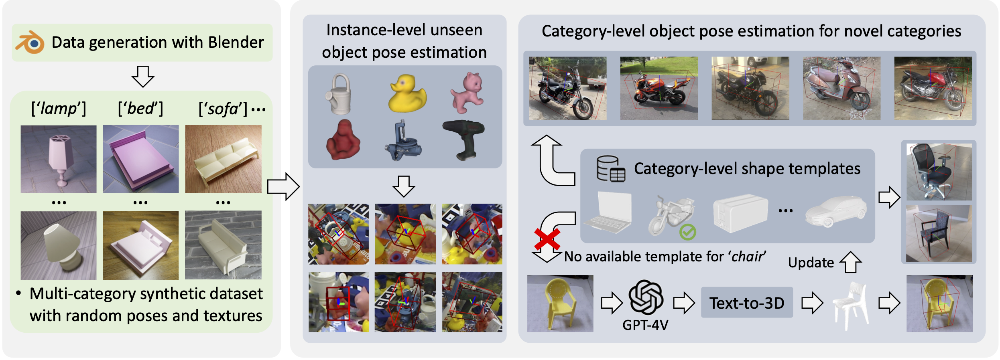
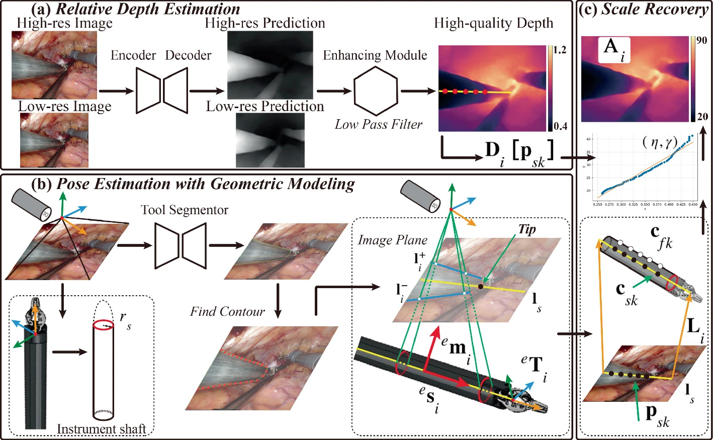
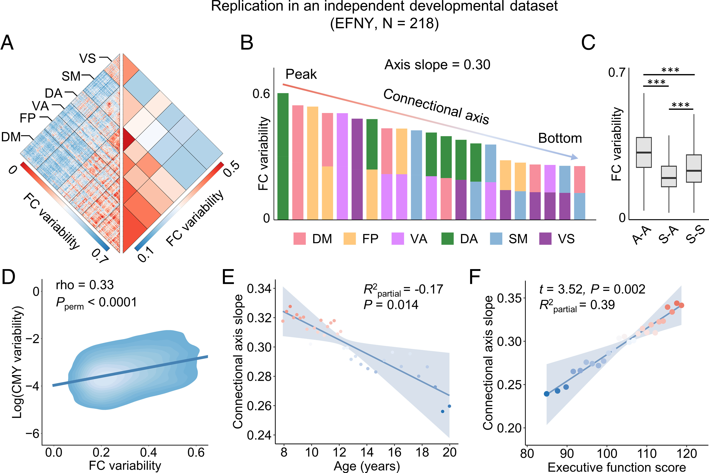
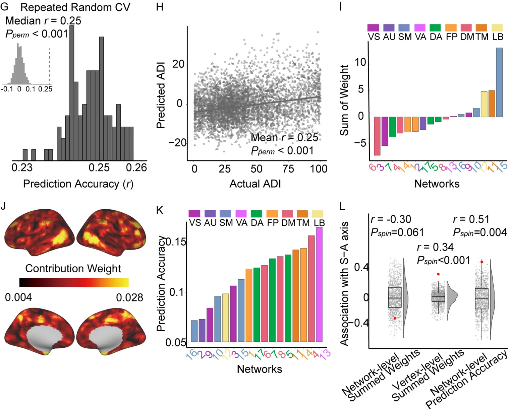

|
|
Yiyao Ma
Ph.D. Student
Department of Computer Science and Engineering
The Chinese University of Hong Kong (CUHK)
Email: yyma23 [at] cse.cuhk.edu.hk
|
Short Bio
Publications
|

|
Shape-guided Configuration-aware Learning for Endoscopic-image-based Pose Estimation of Flexible Robotic Instruments
Yiyao Ma*, Kai Chen*, Hon-Sing Tong, Ruofeng Wei, Yui-Lun Ng, Ka-Wai Kwok, Qi Dou.
European Conference on Computer Vision (ECCV), 2024.
[paper] [project]
|
|

|
Vision Foundation Model Enables Generalizable Object Pose Estimation
Kai Chen, Yiyao Ma, Xingyu Lin, Stephen James, Jianshu Zhou, Yun-Hui Liu, Pieter Abbeel, Qi Dou.
Conference on Neural Information Processing Systems (NeurIPS), 2024.
[paper] [project]
|
|

|
Enhanced Scale-aware Depth Estimation for Monocular Endoscopic Scenes with Geometric Modeling
Ruofeng Wei, Bin Li, Kai Chen, Yiyao Ma, Yunhui Liu, Qi Dou.
International Conference on Medical Image Computing and Computer-Assisted Intervention (MICCAI), 2024.
[paper]
|
|

|
Connectional axis of individual functional variability: Patterns, structural correlates, and relevance for development and cognition
Hang Yang, Guowei Wu, Yaoxin Li, Xiaoyu Xu, Jing Cong, Haoshu Xu, Yiyao Ma, Yang Li, Runsen Chen, Adam Pines, Ting Xu, Valerie J. Sydnor, Theodore D. Satterthwaite, and Zaixu Cui.
Proceedings of the National Academy of Sciences of the United States of America (PNAS), 2025.
[paper]
|
|

|
Hierarchical individual variation and socioeconomic impact on personalized functional network topography in children
Shaoling Zhao, Haowen Su, Jing Cong, Xue Wen, Hang Yang, Peiyu Chen, Guowei Wu, Qingchen Fan, Yiyao Ma, Xiaoyu Xu, Chuanpeng Hu, Hongming Li, Arielle Keller, Adam Pines, Runsen Chen, and Zaixu Cui.
BioMed Central Medicine (BMC Medicine), 2024.
[paper]
|
Miscellaneous
|
Professional Activities
IEEE International Conference on Computer Vision (ICCV).
IEEE International Conference on Robotics and Automation (ICRA).
IEEE/RSJ International Conference on Intelligent Robots and Systems (IROS).
|
Teaching Experience
As teaching assistant.
- 2023-2024 Fall Fundamentals of Artificial Intelligence (CSCI 3230 & ESTR 3108).
- 2023-2024 Spring Problem Solving by Programming (ENGG 1110).
- 2024-2025 Fall Fundamentals of Artificial Intelligence (CSCI 3230 & ESTR 3108).
- 2024-2025 Spring Introduction to Operating Systems (CSCI 3150).
|
|